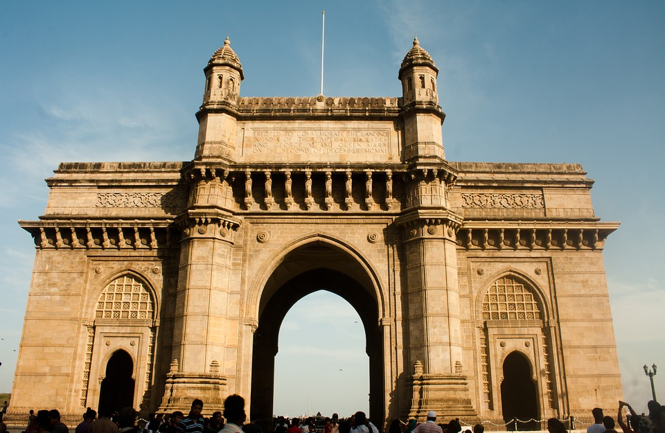
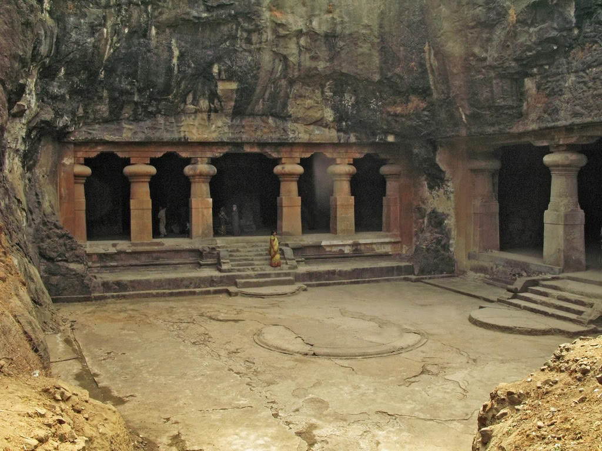
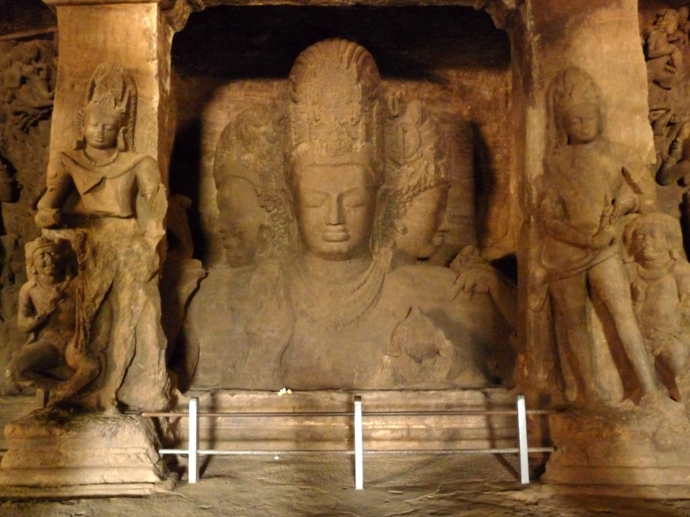
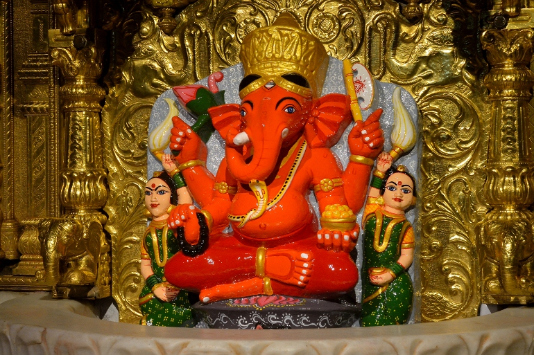
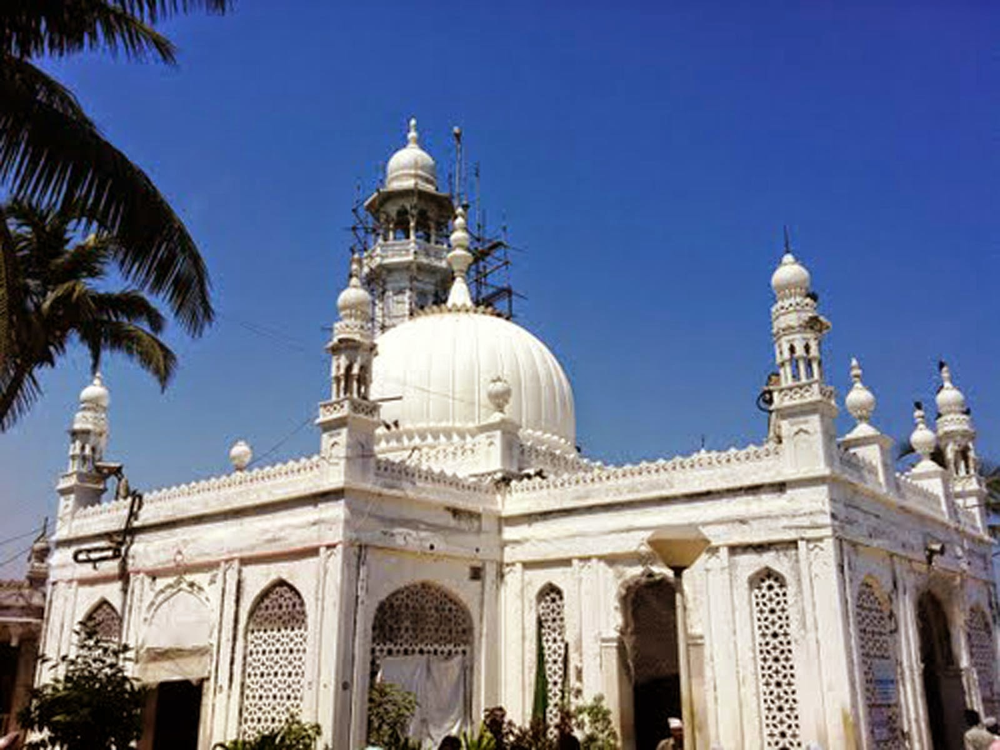

Places to Visit In Mumbai
Gateway Of India
The Gateway of India is one of India's most unique landmarks situated in the city of Mumbai. The colossal structure was constructed in 1924. Located at the tip of Apollo Bunder, the gateway overlooks the Mumbai harbor, bordered by the Arabian Sea in the Colaba district. The Gateway of India is a monument that marks India's chief ports and is a major tourist attraction for visitors who arrive in India for the first time. At one point of time, this monument represented the grandeur of the British Raj in India.
The structural design of the Gateway of India is constituted of a large arch, with a height of 26m. The monument is built in yellow basalt and indissoluble concrete. The structural plan of Gateway of India is designed in the Indo-Saracenic style. One can also find traces of Muslim architectural styles incorporated in the structure of the grandiose edifice. The central dome of the monument is about 48 feet in diameter, with a total height of 83 feet. Designed with intricate latticework, the 4 turrets are the prominent features of the entire structure of the Gateway of India. There are steps constructed behind the arch of the Gateway that leads to the Arabian Sea. The monument is structured in such a way that one can witness the large expanse of the 'blue blanket' right ahead, welcoming and sending off ships and visitors.
Elephanta Caves
 Located close to the concrete jungle of Mumbai, the Elephanta Caves lie just off the coast of the Arabian Sea, situated at a 10 km radius from the bustling metropolis. One of the oldest rock cut structures in the country, the Elephanta Caves are the perfect expressions of archaic Indian art associated to the cult of Lord Shiva. Primarily believed to be the abode of Lord Shiva, the Elephanta Caves are an epitome of Hindu Cave culture and are a unique testimony to a bygone civilization. The origins of the Elephanta Caves have been debated time and again, though the sculptures and the art speak volumes about the time from when they could have been popular-6th or the 8th century. The island on which the caves are built was originally known as Gharapuri, and the Portuguese retitled it as Elephanta Island when they discovered a large stone structure of an Elephant on the island. The temple was primarily built for the worship of Lord Shiva and 'Shivaism'. However, it is believed that the Portuguese destroyed many other structures and even used the idols of Hindu Gods within the caves for target practice. Today, the site is a popular tourist hot-spot.
A small island just off the coast of the Arabian Sea may be the least expected place for shopping for souvenirs, but get ready to be pleasantly surprised with the collection of local Elephanta souvenirs that you can take back home. Once you are on the island, a short walk uphill will bring you to the local flea market. A paradise for women, this little market offers sculptures made of marble, jewelery, clothes, paintings of Lord Shiva and many amazing items of wood work. If you are collecting Indian artifacts, then there is no better place to shop for souvenirs than the Elephanta Caves. While the prices are a bit exorbitant, it always helps to know the basics of bargaining in the world of barter-especially at unique and beautiful places like the Elephanta Caves.
Siddhivinayak Temple
One of the most beautiful temples situated in Mumbai, the Siddhivinayak temple is a standing testament of beauty and architecture. This ancient temple was constructed in 1801 and is dedicated to the elephant-head deity of Hinduism, 'Lord Ganesh'. This venerated temple in Mumbai was constructed by Deubai Patil and Laxman Vithu. The shrine was reconstructed for accommodating more devotees after considering the opinions of many religious experts. Every day, over 25,000 devotees flock the temple to offer their prayers and seek the blessings of Lord Ganesh. Tuesday is considered to be the most important day for 'puja' and 'darshan' at this temple. Bollywood celebrities too, come to visit this divine place of worship to seek blessings before the launch of their new films or otherwise. When one visits this place, one cannot help but admire the temple's ancient style of architecture and its many features. An elegant masterpiece with a unique design, the Siddhivinayak Temple is a hot-spot for tourists who visit Mumbai.
Haji Ali Dargah
The Haji Ali Dargah is a historical landmark in Mumbai, and is also one of the most prestigious Islamic symbols situated in South Mumbai. The Haji Ali was built by a wealthy Muslim merchant who became a saint named Haji Ali Shah Bukhari. He renounced all worldly pleasures before embarking on a pilgrimage to Mecca. The Haji Ali Dargah was built in his honor in 1431 AD. The whitewashed structure is situated in an area of 4,500 meters and is flanked by crisp, marble pillars that are still marveled at today. This 400-year-old structure that stands in Mumbai today has degenerated and corroded in many places and the structural upgradation of this marvelous structure began in 2008. People from all over the world visit the Haji Ali Dargah irrespective of caste, religion and creed. The Haji Ali Dargah is a popular pilgrimage site today and most tourists visit the tomb of Pir Haji Ali Shah Bukhari to seek his blessings for wealth, health, marriage etc. On special occasions such as the death anniversary of the saint or Eid-ul-Fir, special events or programs are organized at the Haji Ali Dargah in Mumbai.
Sanjay Gandhi National Park
Previously known as 'Borivali National Park', Sanjay Gandhi National Park was established in 1969. This park comprises of a large protected area and extends over 104 square km. Located in northern most suburban Mumbai, Sanjay Gandhi National Park is one of the most visited parks in the Bollywood City aka Mumbai.Every visitor who comes here enjoys the great panorama of the lush greenery with a remarkable collection of birds, butterflies and various kinds of fauna including the wild leopard. This reputed park is a natural habitat for 36 varieties of mammals, 62 species of reptiles, 5,000 kinds of insects and 800 diverse flowering plants. One would find a varied collection of wild animals including Bonnet and Rhesus monkeys, Indian Hare, Sambar deer, Gray Lungur, Chital, Macaque and many more. Another major attraction of this place is the presence of Atlas Moth, world's largest moth. Karvi, an exotic variety of flora is also found here which blossoms only once in eight years.